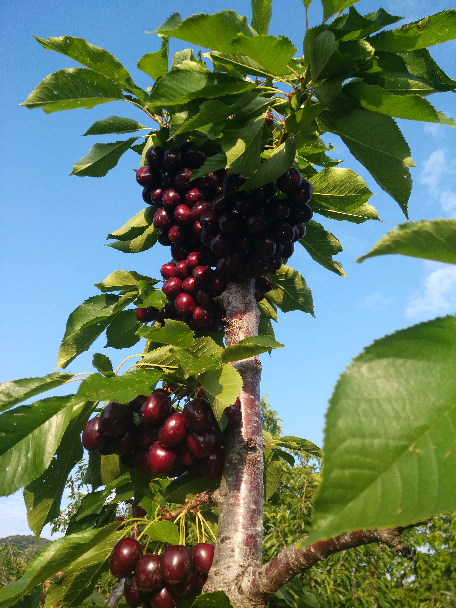

Rize'de doğdum.Aslen memleketim Afyon Çay.Annem ve Babamın işleri gereği 12 yıl Rize'de yaşadım.
İlk okulumu Çay ilköğretim okulunda okudum.Daha sonra Antaylaya taşındık.Güvenlik orta okulunu ve Çağlayan Anadolu
lisesinde okudum ve mezun oldum.
Sakarya Üniversitesinde Bilgisayar Mühendisliğini kazandım.Halihazırda okumaya devam etmekteyim.Okulu şuanda
Antalyadan uzaktan ilerletmekteyim.
Genel yaşantımın yarısından fazlası isteristemez bilgisayarda geçiyor.Kendimi bildim bileli bilgisayar oyunlarıyla oynuyorum. Onun dışında elektroniğe büyük ilgim var.Son yıllarda oyunları oynamaktan daha çok modlamayı sever oldum ve oyuna harcadığım sürenin kat ve katını oyunları modlamaya harcamaya başladım. Buna benzer şekilde liseye giriş senelerimde bilgisayar donanımlarında da aynı şekilde bilgisayarı açıp kullanmak yerine bilgisayar donanımını açıp kurcalamayı parça yükseltmeyi ve değişiklik yapmayıda aynı oyun modlamakta olduğu gibi sevmeye başladım. Son 2 yılda kendime yeni bilgisayar sistemi kurdum vaktimin çoğu burda geçiyor. Korona döneminden önce ve bu dönemde vakit buldukça yazlıkta atv sürmeyi çok seviyorum. Antalya'dada arkadaşlarla bisiklet grubumuz var.Gezilicek yerlere ve genel olarak denize çok gidiyoruz. Kiraz ve badem hasat zamanlarında Afyon Çaya ve Isparta Uluborlu'ya kiraz ve badem toplamaya gidiyorum. haziranın sonlarında kiraz hasadı bittikten sonra eylül vakti badem hasadı başlıyor.Bu sürelerde o bölgelerde oluyorum.Film izlemeyi çok severim.Kitap okumaya fazla vakit ayırmasamda ayda minimum 3-4 kitap okurum. Filmlerde genelde tarihi ve bilim kurgu konularını severim.Kitaplardada yazarın oluşturduğu ütopik dünyaya ayak uydurmaktan çok zevk alırım.